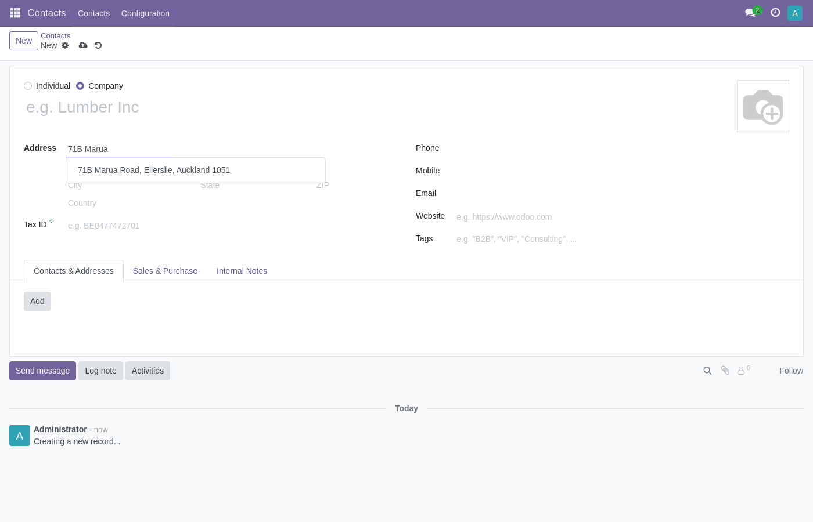
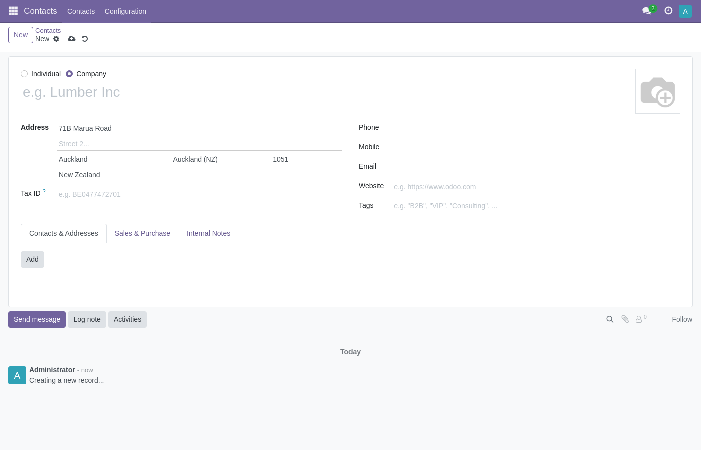
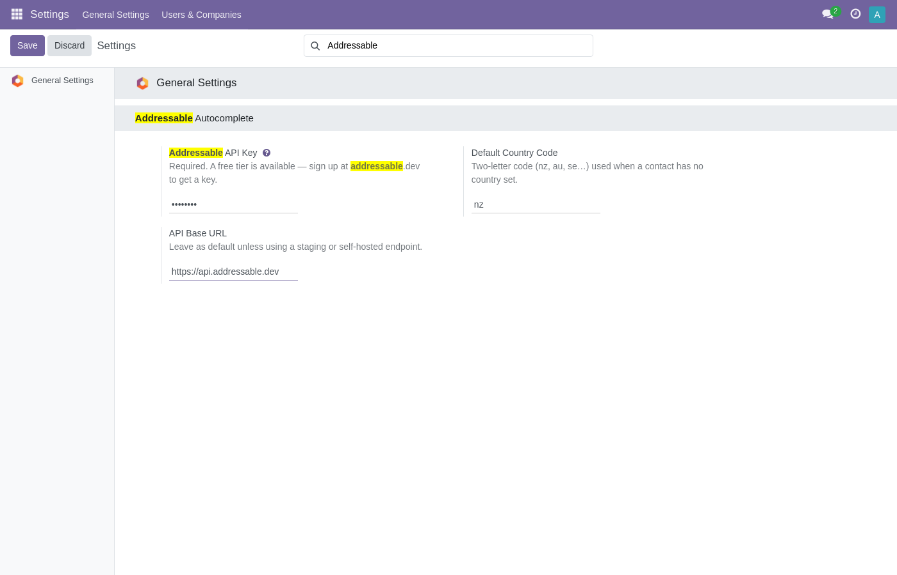

Start typing an address on any contact, customer or vendor and pick a real, verified address from the dropdown. Street, city, state, postcode and geo-coordinates are filled in automatically.
A privacy-friendly alternative to Google Places, built on open address data.

Pick a suggestion and the address block fills itself — street, city, state, postcode and country:

This connector is free and open source (LGPL-3). It requires an Addressable API key to work, and a free tier is available.

No data leaves your Odoo instance until you enter an API key. When enabled, the partial address text you type is sent to the Addressable API (over HTTPS) to return matching suggestions — nothing else is collected. Your API key is stored server-side and is never exposed to the browser.
Addressable's privacy policy and terms are published at addressable.dev/pages/terms. For questions, contact support@addressable.dev.